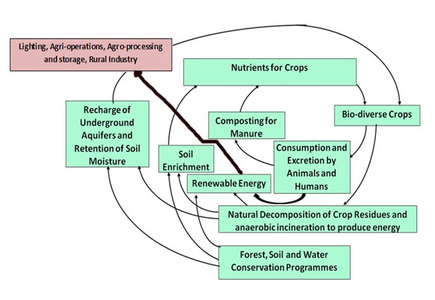
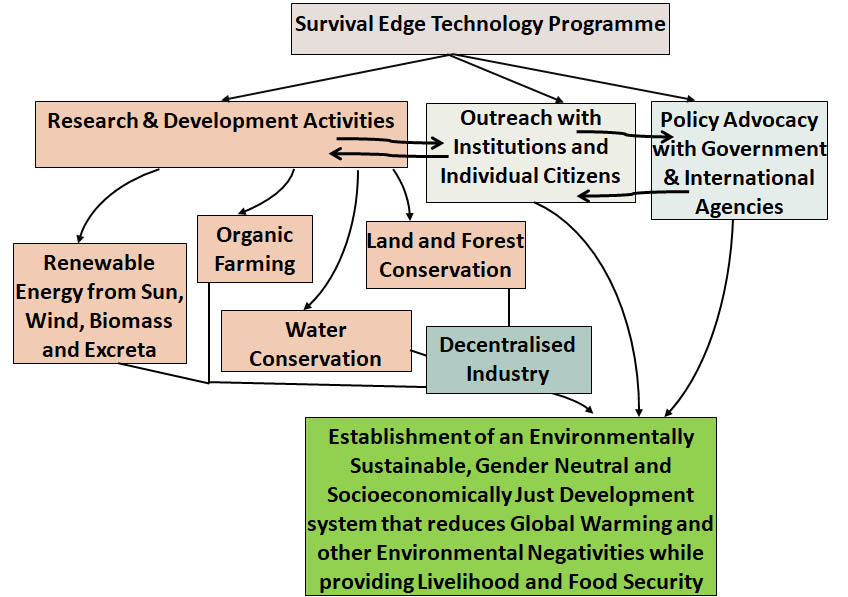

Survival Edge Technology is the assortment of simple technologies that can be implemented by communities through collective action to mitigate the agriculture, water, energy and climate crises that face humanity. The adverse effects of the above mentioned crises are felt most by women due to the patriarchal nature of society. Therefore, an important aspect of Survival Edge Technology is the agency of women in its planning and implementation as communitarian cooperation alone is not enough.
The need for such a terminology has arisen because of the fascination of the dominant development paradigm with centralized high investment cutting edge technology, which is ironically offered as a panacea for the agricultural, energy, water and climate crises that it has created. Thus, this new terminology combines and gives visibility to the various simple technologies being implemented by communities across the world through collective action to conserve the environment in a sustainable and equitable manner. The new term can be defined as follows – “Decentralized and communitarian work in soil and water conservation, sustainable agriculture, afforestation and renewable energy needs to be done extensively if the human race is to survive the deepening water, food, energy and climate crises. Moreover, since these crises most affect the poor who live on the edge of survival in rural areas, the decentralized communitarian technology required to mitigate these crises can appropriately be called Survival Edge Technology".
Presently this technology is being implemented by the NGO, Mahila Jagat Lihaaz Samiti and the mass organisations Khedut Mazdoor Chetna Sangath and Kansari Nu Vadavno in Western Madhya Pradesh among the Bhil Adivasis. The various components of Survival Edge Technology are as follows –
Growing forests are the best sequesters of carbon and producers of oxygen. They also provide nutrients for agriculture as the decaying leaves become very good manure. Moreover, they hold the soil and prevent it from being eroded. Last but not the least, forests not only attract rainfall but also recharge this rain into the ground by reducing runoff and so ensure the base flow in streams throughout the year when there is no rainfall. Therefore, afforestation is a very important activity. In India in the dry land areas afforesting degraded land is a challenge because saplings that are planted during the monsoon cannot withstand the dry heat of the summers when temperatures reach close to 50 degrees centigrade. Therefore, it is easier to protect degraded lands which have root stock from grazing so that this root stock can regenerate and become forests again in a short period of time. The Adivasis of Western Madhya Pradesh have done precisely this with aplomb.
Given the scale of deforestation and soil erosion that has taken place just afforestation alone is not enough and so soil and water conservation work has also to be done. Ideally, this should be done in micro-watersheds so as to drought and flood-proof the catchment of a stream. The work should start from the ridges of the watershed along the contours and come down to the main drainage line. There can be trenches and bunds along the contours and gully plugs across the smaller drainages and check dams and tanks on the main drainage line. This work too has been done very well by the Adivasis of Western Madhya Pradesh.
Centralized energy generation and then its distribution is a costly affair both in economic and environmental terms and a major reason for the low per capita energy consumption in India. Therefore, renewable energy is a very important area of work. This includes passive and active solar, bio-methanation, anaerobic gasification of biomass and wind power. The Mahila Jagat Lihaaz Samiti is working on all these in various locations.
A major problem currently is the severe lack of potable water and the improper disposal of waste water. This is particularly acute in cities many of which have been declared to be about to face zero ground water supply in a few years and so augmentation of ground water through recharging and water harvesting are of the utmost importance. Simultaneously the treatment and reuse of waste water and the generation of manure and energy from the faecal toilet and organic kitchen waste is also necessary, both to improve sanitation and cater to some of the demand for water and energy.

External input chemical agriculture has reached
its limits and yields are declining while costs are increasing.
This
agriculture has also led to a huge increase in water demand, resulting in water stress. Hybrid Monocultures have
also led to a drastic fall in agricultural biodiversity and increased pest attacks. Therefore, there is a need
for
reorienting agriculture towards the use of organic resources such as mulch, compost and
indigenous seed varieties and water harvesting. Simultaneously the cropping has to shift towards less water
intensive
varieties which are
also higher in nutrition. A model for this sustainable agriculture has been developed and is being implemented
as
shown.
Decentralized technologies can be properly implemented only if there is active communitarian cooperation through collective action. The Western Madhya Pradesh region has witnessed such collective action and its methodology is as follows -
Patriarchy stifles the creativity and freedom of women and girls and so without gender-based action to counter it, collective action cannot be effective and sustainable. A major problem is the adverse gender division of labour and the burden of repeated childbirths and child care which create reproductive health and psychological problems for women. Most women suffer in silence because there are no facilities in the public health system to treat these problems and the private doctors are beyond the reach of these women. The Mahila Jagat Lihaaz Samiti runs a high impact reproductive health program that tries to fill this gap.
The overall framework of the implementation of
Survival Edge Technology encompasses work at the grassroots level
with
policy and legal advocacy at higher levels up to the national and global, and is represented as shown in the
schematic
diagram. The underlying principle is that of subsidiarity which has been defined as - "the central level of
authority
shall act only if and in so far as the objectives of the proposed action cannot be sufficiently achieved either
at
the
regional or the local level, but can rather, by reason of the scale or effects of the proposed action, be better
achieved at the central level". Thus, this emphasizes a trickle-up theory as opposed to the failed trickle-down
theory that is
the basis of modern development practice.